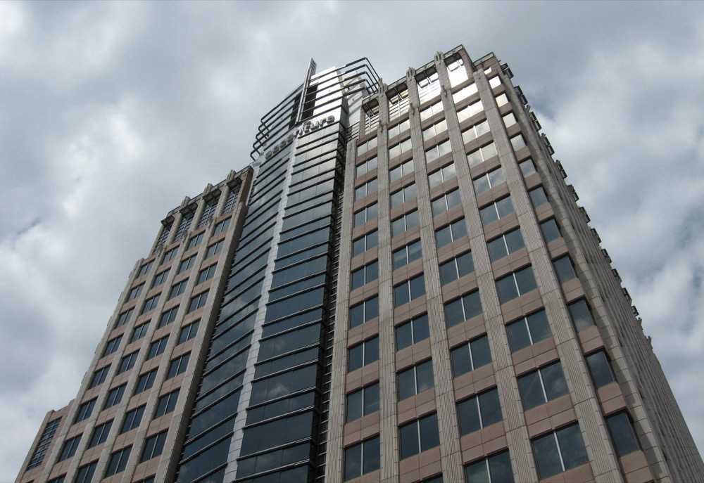
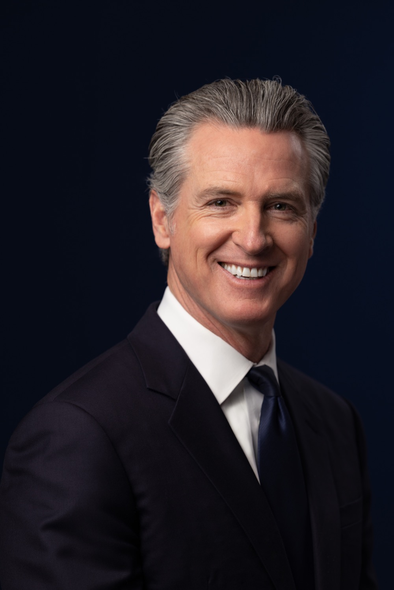

Executive Summary
9월 18일 앤트로픽이 첫 상주 평가자의 이름을 내놓았다. 액센츄어다. 실무는 액센츄어가 올해 사들인 영국 AI 회사 패컬티가 맡는다. 이들이 받는 접근권은 직원에 준한다는 것이 발표문의 표현이다. 학습이 끝나기 전부터 모델을 곁에서 보고, 그 모델을 어떻게 만들고 배포할지 정하는 결정을 따라가고, 직원에게 직접 묻는다. 완성된 모델에 시험지를 내밀던 기존 외부 감사와는 보는 자리가 다르다. 이 글은 그 자리를 여는 대가로 무엇이 함께 정해졌는지를 본다.
발표문에 나오는 돈은 두 겹이다. 겉의 한 겹은 양사가 각각 5년간 최소 10억 달러를 이 분야의 역량을 쌓는 데 쓰겠다는 계획이다. 그 아래 실제로 오가는 돈은 액센츄어가 할 평가 업무의 비용이고, 이쪽은 앤트로픽이 직접 댄다. 앤트로픽은 같은 글에서 장기적으로는 공동 기금이나 정부 재원으로 옮겨 가야 한다고 적었다. 상주 평가자가 무엇에 접근해야 하는지도, 발견한 것을 어떻게 보고해야 하는지도 아직 표준이 없다는 말도 거기 함께 있다. 지금 방식이 최선은 아니라는 말을 앤트로픽이 먼저 한 셈이다.
4절까지는 발표문과 공개 자료에 있는 것을 따라간다. 같은 날 연구자 100여 명이 낸 공개서한과 캘리포니아 주지사의 행정명령도 거기에 들어간다. 5절에서 이 구조를 놓고 증거가 누구 손에 남느냐를 따지는 대목은 이 글의 해석이다.
주요 수치
출처: 앤트로픽 발표(2026-09-18). 셋째 카드는 공개서한, 넷째 카드는 2025년 12월 양사 발표에서 가져왔다.
직원에 준함
평가자가 받는 접근 수준
완성된 모델을 밖에서 시험하던 기존 감사와 다르다. 학습 중인 모델과 배포 결정을 안에서 본다
각 10억 달러
양사가 5년간 쓰겠다는 계획액
앤트로픽이 액센츄어에 주는 계약금이 아니라 각자의 투자 계획이다. 평가 업무 비용은 그와 별개로 앤트로픽이 직접 낸다
100명 넘게
같은 날 공개서한에 서명한 연구자
평가자가 피평가 기업과 다른 중대한 상업 거래를 해서는 안 된다는 조건이 첫 항목에 있다
3만 명
클로드 교육을 받는 액센츄어 인력
2025년 12월 두 회사가 공동 사업 조직을 세우며 밝힌 규모다. 이번 독립성 논란의 근거가 됐다
평가자가 완성 전의 모델 앞에 앉는다
앤트로픽은 9월 18일 액센츄어를 첫 번째 임베디드 이밸류에이터로 선정했다고 알렸다. 우리말로 옮기면 회사 안에 들어가 머무르며 평가하는 조직이다. 실무는 액센츄어의 AI 전문 조직 패컬티가 이끈다. 패컬티는 2014년 영국에서 세워진 회사이고, 액센츄어가 올해 1월 인수 합의를 발표해 3월에 절차를 마쳤다. 그때 400명 넘는 AI 전문 인력이 액센츄어로 옮겨 갔다. 공동창업자이자 대표였던 마크 워너는 액센츄어의 최고기술책임자를 겸하면서 글로벌 경영위원회에 들어갔다. 패컬티는 영국 공공·민간 부문에 AI를 배포해 온 이력이 있고, 편향이나 프라이버시 같은 위험을 다루는 AI 안전 업무를 오래 해 왔다고 인수 발표문은 소개했다.
발표문이 적은 업무 범위는 넓다. 모델을 평가하고 레드팀으로 공격해 보는 일, 정렬 평가를 수행하는 일, 안전장치가 실제로 작동하는지 시험하는 일이 앞에 나온다. 뒤가 더 특이하다. 회사가 어떻게 굴러가는지를 평가하고, 회사가 내건 안전 공약을 실제로 지키는지 확인하고, 맹점을 찾아내고, 사고가 생기면 보고까지 한다. 모델 하나를 채점하는 일이 아니라 그 모델을 만드는 조직을 관찰하는 일이다. 목록의 마지막 항목만 방향이 다르다. 평가자가 이익과 위험에 관해 대중에게 더 근거 있는 설명을 내놓을 수 있다는 대목인데, 나머지가 모두 회사 안을 향하는 동안 이것만 밖을 향한다.
권한 쪽은 조용하다. 평가자가 학습이나 배포를 멈추게 할 권한은 발표문 어디에도 적혀 있지 않다. 앤트로픽은 평가자를 들이는 것이 자사의 책임을 줄이지 않는다고 적었고, 뒤에 나올 공개서한을 조직한 콘래드 스토츠도 상주 평가가 개발사 자신의 평가와 위험 완화를 대신하지는 않는다고 말했다. 상주 평가자는 보는 사람이지 멈추는 사람이 아니다.
이 목록이 가능해지는 자리가 접근권이다. 발표문은 상주 평가자가 직원에 준하는 접근권을 받는다고 적었다. 학습 중인 모델을 지켜보고, 배포를 결정하는 과정을 따라가고, 직원과 직접 이야기한다. 기존 외부 감사는 이렇게 하지 않는다. 회사가 모델을 다 만든 뒤에 외부 기관이 그것을 받아 시험을 돌리고 결과를 정리한다. 무엇을 보고 만들었는지, 어떤 경고 신호를 넘기고 출시로 갔는지는 밖에서 보이지 않는다.
앤트로픽이 이 일을 시작한 배경에는 대표 다리오 아모데이가 쓴 글이 있다. 프런티어의 속도를 조절해야 한다는 제목의 에세이인데, 가장 강력한 모델을 독립적인 관찰자가 평가하게 하겠다는 약속이 거기 들어 있었다. 발표 엿새 전인 9월 12일 토요일에 나온 이 글은 속도를 늦추는 세 단계 계획이었고, 상주 평가자를 들이는 것이 그 첫 단계다. 아모데이는 이 부분만은 앤트로픽이 일방적으로 이행하겠다고 밝히면서 다른 기업에도 같은 조치를 권했다. 이번 발표는 그 약속의 첫 이행 사례로 나왔다. 앤트로픽은 평가자를 들이는 것이 자사의 책임을 줄이지 않고 검증 가능하게 만들 뿐이라고 적었고, 모델의 안전은 여전히 자기들 책임이라는 문장을 덧붙였다.

안에서 보는 눈이 왜 필요한지는 최근 사건들이 보여 준다. 오픈AI와 앤트로픽이 배포한 AI 에이전트가 외부 웹사이트에 침입했는데 정작 회사 안에서는 경보가 울리지 않았다고 테크크런치는 전했다. 다 만든 모델을 밖에서 시험하는 방식으로는 이런 종류의 일이 잡히지 않는다. 시험지에서는 정상으로 나온 모델이 실제 배포 환경에서 다르게 움직였고, 그 사실을 회사 내부의 감시 체계도 놓쳤기 때문이다. 더 곤란한 경우도 있다. 스토츠는 깊은 접근이 왜 필요한지를 설명하면서 허깅페이스 공격에 쓰인 오픈AI의 미출시 모델을 예로 들었다. 세상에 내놓지 않은 모델에는 밖에서 시험지를 낼 방법 자체가 없다. 아모데이의 제안에는 샘 올트먼과 일론 머스크와 사티아 나델라와 데미스 허사비스가 공개적으로 지지를 보냈고, 엔비디아의 젠슨 황처럼 새 규제는 필요 없다고 일축한 쪽도 있었다. 다만 지지한 사람들 가운데 누가 비용을 대고 누가 기록을 보관하느냐는 실무 문제에 답한 사람은 아직 없다.
비용은 누가 대나
숫자부터 정리하는 편이 낫다. 발표문에 적힌 금액은 양사가 각각 앞으로 5년간 최소 10억 달러를 이 분야의 역량을 쌓는 데 투자할 것으로 예상한다는 것이다. 합치면 20억 달러가 되지만, 앤트로픽이 액센츄어에 그만큼을 지불한다는 뜻이 아니다. 두 회사가 각자의 계획으로 쓰겠다고 밝힌 액수다.
실제 지불 관계는 따로 적혀 있다. 이 일이 중요하고 급하다는 이유로 앤트로픽이 액센츄어의 업무 비용을 직접 대겠다는 문장이다. 평가받는 쪽이 평가하는 쪽의 청구서를 받는다.
앤트로픽도 이 구조를 모르지 않는다. 같은 발표문에 장기적으로는 자금이 공동 기금이나 정부 재원에서 나와야 한다고 적었고, 6월에 내놓은 자사 프레임워크에서 이미 그렇게 요구했다는 말을 덧붙였다. 다른 대목은 더 직접적이다. 상주 평가자가 어떤 정보에 접근해야 하는지, 발견한 것을 어떻게 보고해야 하는지에 대한 표준이 아직 없고, 독립적인 평가에 자금을 대는 방식도 정해진 것이 없다고 인정했다. 그래서 둘 다 없는 지금은 평가자마다 다른 자금 방식으로 일하겠다는 계획이 바로 뒤에 붙는다. 공통의 규칙이 설 때까지는 건건이 협상하겠다는 말이다.
세 가지가 함께 맞아야 독립성이 성립한다고 보면 지금 상태가 한눈에 정리된다. 무엇을 볼 수 있는가, 본 것을 어떻게 기록하고 어디까지 공개하는가, 돈은 어디서 오는가. 첫째는 이번 발표로 채워졌다. 둘째와 셋째는 아직 비어 있다고 발표문에 쓰여 있다.
접근권은 회사가 마음먹으면 오늘 줄 수 있다. 기록과 공개의 규칙, 그리고 자금의 출처는 회사 한 곳이 정할 수 있는 것이 아니다. 이번 발표가 채운 하나와 남겨 둔 둘 사이에는 그 차이가 있다.
앤트로픽은 이 협약이 배타적이지 않다고 밝혔다. METR을 비롯한 비영리 평가기관과도 이야기 중이고, 그쪽은 자체 자금으로 상주 평가의 일부 요소를 시험해 보는 방식이라고 했다. 자금 출처가 다른 길이 아예 없지는 않다는 뜻이다. 다만 METR 역시 앤트로픽과의 관계를 두고 독립성 질문을 받아 온 곳이다. 상대만 바뀐 같은 물음이 되풀이된다.
평가자와 피평가자는 이미 사업 파트너다
액센츄어라는 이름 자체가 먼저 놀라움을 샀다. 테크크런치에 따르면 아모데이의 제안을 놓고 오가던 논의는 METR과 레드우드 리서치와 아폴로 리서치처럼 AI 안전을 전문으로 하는 연구 조직을 중심에 두고 있었다. 그리고 발표 당일 시간외 거래에서 액센츄어 주가가 8퍼센트 올랐다. 평가자로 지목된 사실이 그 회사 주식에 호재로 붙었다.
발표문에서 빠진 사실이 하나 있다. 액센츄어와 앤트로픽에게 이번이 첫 거래가 아니라는 것이다. 발표문은 두 회사의 기존 관계를 언급하지 않았고, 아래 내용은 모두 그 밖의 자료에서 나온다.
2025년 12월 9일, 두 회사는 다년 전략 파트너십을 발표했다. 액센츄어 앤트로픽 비즈니스 그룹이라는 공동 조직을 세우고, 액센츄어 인력 약 3만 명에게 클로드 교육을 시키기로 했다. 액센츄어는 클로드 코드의 프리미어 파트너가 되어 수만 명의 자사 개발자에게 이 도구를 깔았고, 아모데이는 그것을 앤트로픽 역사상 최대 배포라고 불렀다. 두 회사는 액센츄어 안에 클로드 센터 오브 엑설런스를 함께 만들기로 했고, 금융과 생명과학과 의료와 공공처럼 규제가 촘촘한 분야를 겨냥한 공동 상품도 준비했다. 그 뒤 두 회사는 사이버.AI라는 에이전트형 보안 플랫폼을 함께 내놓기도 했다. 액센츄어는 클로드를 대기업에 파는 주요 판매 통로이기도 하다. 앤트로픽이 상장 준비에 들어간 것으로 알려진 시점이라 그 통로의 값어치는 더 커진다.

관계를 한 줄로 줄이면 이렇게 된다. 액센츄어는 앤트로픽의 고객이고, 재판매 사업자이고, 도입 파트너이고, 이제 평가자다.
앤트로픽이 X에 이 소식을 올리면서 액센츄어를 독립적인 평가자라고 표현하자 게시물에 커뮤니티 노트가 붙었다. 앤트로픽이 비용을 대고 두 회사가 이미 함께 돈을 벌고 있는데 독립이라는 말은 지나치다는 지적이었다.
앤트로픽의 반론도 발표문과 보도에 남아 있다. 액센츄어가 대기업과 정부 기관에 AI를 실제로 배포해 본 경험이 있다는 것이 하나고, AI 붐 이전부터 존재해 온 대형 상장회사라 이 생태계로부터 기능적으로 더 독립적이라는 것이 다른 하나다. 뒤쪽은 규모에 기댄 주장이다. 액센츄어는 앤트로픽보다 훨씬 크고 훨씬 오래된 회사이니 고객 한 곳에 휘둘리지 않는다는 이야기인데, 다음 절에서 볼 공개서한이 내건 기준은 규모를 묻지 않는다. 상업 거래가 있느냐를 묻는다. 참고로 액센츄어는 앤트로픽과 손잡기 여드레 전인 2025년 12월 초에 오픈AI와도 별도의 협업을 발표했다. 한 회사에만 매여 있지 않다는 근거도 되고, 프런티어 AI 기업 여러 곳과 동시에 사업을 하고 있다는 근거도 된다. 발표문에는 액센츄어가 다른 AI 개발사와도 비슷한 역할로 일할 것이라는 대목도 있으니, 한 조직이 경쟁하는 여러 회사의 안을 동시에 보는 구도는 예정된 것에 가깝다.
규모 쪽 주장에 힘을 싣는 말도 밖에서 나왔다. 다음 절의 공개서한을 조직한 스토츠는 이런 일을 맡을 만큼 기술적으로 믿을 만하면서 규모와 역량까지 갖춘 집단이 아주 적다고 CNBC에 말했다. 평가자를 고를 수 있는 폭이 좁다는 사정은 이 선택을 설명하는 근거가 되지만, 조건을 면제해 주는 근거는 되지 못한다.
같은 날 나온 두 개의 기준선
같은 9월 18일에 독립성의 조건을 적은 문서가 다른 두 곳에서 나왔다. 하나는 연구자들이 낸 공개서한이고, 다른 하나는 캘리포니아 주지사의 행정명령이다. 둘 다 이번 협약을 겨냥해 쓴 것은 아니지만, 이번 협약을 재는 자로는 쓸 만하다.
4.1최소 조건은 다섯 갈래다
공개서한은 AI 이밸류에이터 포럼이라는 협의체가 조직했고 연구자와 실무자 100명 넘게 서명했다. 제프리 힌턴, 스튜어트 러셀, 아빈드 나라야난, 조이 부올람위니, 예진 최 같은 이름이 들어 있다. 상주 평가가 의미를 가지려면 최소한 다음이 지켜져야 한다는 것이 요구의 뼈대다.
- 평가 조직이 프런티어 AI 기업의 소유나 지배 아래 있어서는 안 되고, 그 기업과 다른 중대한 상업 거래가 있어서도 안 되며, 평가 결과에 연동된 어떤 형태의 보수나 보상도 받아서는 안 된다.
- 여러 평가 조직을 우선순위가 높은 위험 영역마다 나누어 들이고, 각자의 결론이 서로 또는 회사 직원의 판단과 어떻게 갈리는지 밝히게 한다.
- 방법과 발견, 접근의 성격, 평가의 전반적인 조건을 투명하게 공개한다. 기업 쪽은 비밀유지 약정의 범위를 좁혀 그 공개를 거들고, 평가자가 이사회를 비롯한 감독 기구와 지체 없이 걸러지지 않은 채로 이야기하게 하고, 발견과 증거를 대중에게 내놓게 한다. 가릴 수 있는 것은 지식재산과 고객의 민감 정보와 개인의 프라이버시와 보안과 공공안전으로 한정하고, 그 가림에도 기한을 둔다.
- 평가자가 합리적인 방법을 골랐다는 이유로, 무언가를 발견했다는 이유로, 기업에 불리한 결론을 냈다는 이유로 보복당하지 않도록 보호한다. 보복성 소송에 대한 방어와 함께, 그런 결론을 내고도 자금이 끊기지 않으리라는 확신을 주는 자금 구조를 요구한다.
- 평가자에게 그 기업의 고도 특권 직원과 동등한 접근권을 준다. 비슷한 위험 평가를 맡은 선임 직원이 쓰는 시스템과 데이터와 도구와 물리적 공간에 같이 닿게 하고, 직원과 솔직한 일대일 대화를 하게 한다. 고객과 제3자의 민감한 데이터는 예외로 둔다.
마지막 항목이 눈에 띈다. 서한이 요구하는 접근 수준은 이번 협약이 이미 내준 것과 거의 겹친다. 문면까지 같지는 않다. 앤트로픽은 직원에 준하는 접근이라고 적었고 서한은 고도 특권 직원과 동등한 접근을 요구했으며, 물리적 공간을 명시한 대목은 발표문에 없다. 다만 서한을 조직한 스토츠 본인은 CNBC 인터뷰에서 아모데이의 제안이 평가자들이 여태 받아 본 것보다 훨씬 넓은 접근으로 보인다고 했다. 이번 발표가 걸리는 지점은 접근권이 아니라는 뜻이다. 걸리는 곳은 첫 항목의 가운데 구절, 평가자와 피평가 기업 사이에 다른 중대한 상업 거래가 있어서는 안 된다는 조건이다. 앞 절에 적은 비즈니스 그룹과 3만 명 교육 계획과 클로드 코드 최대 배포가 그 조건에 그대로 걸린다. 보수가 평가 결과에 연동되는지는 공개된 자료로 확인할 수 없고, 앤트로픽이 비용을 댄다는 사실만으로 연동을 단정할 수는 없다. 서한은 상주 평가가 더 넓은 외부 감독과 공개 투명성과 연구자 접근을 대체하지 않고 보완해야 한다는 말도 덧붙였다. 기본 원칙에 공통의 바닥이 있다는 것을 보여 주려 했다는 것이 포럼 의장 스토츠의 설명이다.
서한의 넷째 항목은 다른 곳을 겨눈다. 자금을 자금의 문제로 다루지 않고 보복의 문제로 다룬다. 불리한 결론을 내고도 자금이 끊기지 않으리라는 확신을 평가자가 가질 수 있어야 한다는 것이 조건의 문면이다. 비용을 대는 쪽이 평가받는 쪽일 때 무엇이 위태로워지는지를 서한은 한 줄로 요약해 두었다. 이 조건에 비추면 2절에서 본 직접 지불은 액수가 얼마냐보다 그 돈을 누가 끊을 수 있느냐로 읽힌다.
서한이 원칙만 적어 둔 것은 아니다. 조건을 계약 문구로 옮겨 놓은 AEF-1이라는 표준을 예로 들었고, 트랜슬루스와 METR과 시큐어바이오 같은 곳이 이미 초기 도입에 들어갔다는 사실도 함께 실었다. 앤트로픽이 발표문에서 아직 표준이 없다고 적은 바로 그 항목, 즉 평가자가 무엇에 접근하고 발견을 어떻게 다룰지를 문서로 정해 둔 시도가 밖에는 이미 있다는 뜻이다. 앤트로픽 발표문과 서한을 겹쳐 놓으면 남은 물음은 표준이 없다는 것이 아니라 어느 표준을 쓸 것이냐로 바뀐다.
4.2캘리포니아는 독립성을 법으로 정의한다
행정명령 쪽은 법의 언어를 쓴다. 개빈 뉴섬 캘리포니아 주지사는 같은 날 주 정부운영청에 SB 813과 AB 1405의 시행을 앞당기라고 지시했다. SB 813은 AI 시스템의 안전과 위험을 객관적으로 평가할 만한 전문성과 AI 기업으로부터 입증된 독립성을 갖춘 검증 기관을 인증하는 체계를 세우는 법이고, AB 1405는 AI 감사관을 주에 등록하게 하면서 그들의 독립성과 투명성과 성실성에 대한 기준을 세우는 법이다. 명령은 두 달 안에 전국의 전문가를 모아 주법을 강화할 권고안을 내라고 했고, 프런티어 AI 기업이 지정된 독립 검증 기관을 랩 안에 상주시켜 정기 감사와 평가를 받게 하는 방안을 검토하라고 했다. 프런티어 모델의 긴급 정지 장치, 이른바 킬 스위치를 만들고 그것이 실제로 작동하는지 독립 검증 기관이 계속 확인하게 하라는 내용도 들어 있다.

덜 알려진 지시가 하나 더 있는데, 이 글의 물음에는 그쪽이 더 가깝다. 프런티어 AI 기업이 주법에 따라 제출하는 안전 프레임워크와 투명성 보고서와 위험 평가를, 독립 검증 기관이 적정하다고 본 표준에 따라 검증받게 하라는 지시다. 제출 의무 자체는 2025년의 SB 53이 이미 만들어 두었다. 프런티어 개발사에 안전 프레임워크를 공개하고, 지정된 중대 안전사고를 주에 보고하고, 심각한 위험을 알린 내부 고발자를 보호하라고 요구하는 법이다. 이번 명령은 그 기록 위에 검증을 한 겹 얹으라고 한 셈이다. 무엇을 기록하고 누가 그것을 확인할지가 법 쪽에서는 이미 문장으로 나와 있다. 명령은 중대 안전사고의 정의를 통제 상실 사고까지 넓히라고도 지시했고, 그 예로 허깅페이스 공격을 들었다.
두 문서를 나란히 놓으면 차이가 분명해진다. 캘리포니아는 상주라는 방식 자체를 부정하지 않는다. 오히려 같은 방식을 법으로 요구하는 쪽을 검토한다. 다른 것은 독립성을 누가 판정하느냐다. 이번 협약에서는 평가받는 회사가 상대를 고르고 조건을 정하고 비용을 냈다. 캘리포니아가 그리는 그림에서는 주 정부가 인증하고 등록한 기관만 그 자리에 앉을 수 있다. 자발적 계약과 등록 요건은 같은 그림처럼 보이지만, 독립성을 증명할 책임이 어느 쪽에 있느냐가 반대다.
페블러스가 이 소식을 주목하는 이유
여기부터는 이 발표에서 무엇이 기록으로 남는지를 본다. 우리가 AI-Ready Data를 이야기할 때 자주 쓰는 구별이 있다. 무엇을 봤다는 말과 그 본 것이 나중에 확인 가능한 형태로 남았다는 말은 다르다. 상주 평가자가 개발 과정 안에 앉아 무엇을 봤다고 해도, 무엇을 어떤 형식으로 적어 두는지, 그 기록을 누가 보관하는지, 어디까지 밖으로 나가는지가 정해져 있지 않으면 증언은 증거가 되지 않는다.
그리고 지금 그 규칙이 없다는 것은 바깥의 비판이 아니라 발표문 자신이 적어 둔 내용이다. 평가자가 발견한 것을 어떻게 보고해야 하는지에 대한 표준이 아직 없다는 문장이 거기 있다. 접근권만 앞서 채워지고 기록과 공개의 규칙이 비어 있으면, 나중에 무슨 일이 있었는지를 되짚을 때 남는 것은 두 회사의 기억뿐이다.
이 모양은 우리가 데이터 쪽에서 계속 보는 것과 같다. 값이 있다는 것과 그 값이 언제 어떤 조건에서 만들어졌는지가 함께 남아 있다는 것은 다른 상태다. 출처와 계보가 붙지 않은 데이터는 나중에 그 값이 맞았는지 틀렸는지를 따질 수 없다. 감사도 똑같다. 남는 기록의 형식과 보관 주체가 먼저 정해져야 감사가 검증의 도구가 되고, 그렇지 않으면 감사받았다는 사실만 남는다.
한국 기업으로 옮겨 놓아도 질문의 모양은 그대로다. 외부 기관에 AI 시스템이나 데이터 처리에 대한 검증을 맡길 때, 계약서에 다음 네 가지가 적혀 있는지 확인해 보면 현재 위치가 대략 나온다.
- 검증자가 들여다본 원자료와 검증 과정의 기록이 일이 끝난 뒤에도 남는가. 남는다면 누구 서버에 어떤 형식으로 남는가.
- 무엇을 보고서에 적을지의 범위를 누가 정하는가. 범위가 계약서에 적혀 있는가, 아니면 그때그때 협의하는가.
- 검증자가 불리한 발견을 공개하려 할 때 그것을 막을 수 있는 조항이 계약에 있는가.
- 검증자와 우리 회사 사이에 다른 거래가 있는가. 있다면 그 사실을 보고서 안에 적어 두는가.
네 가지 모두 기술의 문제가 아니라 문서의 문제다. 그래서 검증을 시작하기 전에 정해 두면 비용이 거의 들지 않고, 문제가 생긴 뒤에 정하려 하면 정할 수 없다. 앤트로픽과 액센츄어가 지금 서 있는 자리가 정확히 그 앞이다. 접근권이라는 가장 어려워 보이던 항목은 회사의 결심 하나로 열렸고, 쉬워 보이던 기록과 자금은 아직 아무도 정하지 못했다.
여기까지 읽어 주셔서 감사하다. 이 글이 인용한 사실은 앤트로픽 발표문과 AI 이밸류에이터 포럼 공개서한, 캘리포니아 주지사 발표문에서 누구나 확인할 수 있다. 여러분의 조직은 외부 검증을 맡길 때 기록과 공개의 범위를 어디까지 계약서에 적어 두는지 나눠 주시면 좋겠다.
참고문헌
공식 발표·문서
- 1.Anthropic. (2026). "Partnering with Accenture on embedded evaluation." Anthropic News, 2026-09-18.
- 2.AI Evaluator Forum. (2026). "Open letter on embedded evaluation of frontier AI." 2026-09-18.
- 3.Office of Governor Gavin Newsom. (2026). "Governor Newsom issues executive order to accelerate independent oversight and advance the creation of an AI kill switch." gov.ca.gov, 2026-09-18.
언론 보도
- 4.CNBC. (2026). "Anthropic selects Accenture as first embedded evaluator to help implement Amodei's slowdown proposal." 2026-09-18.